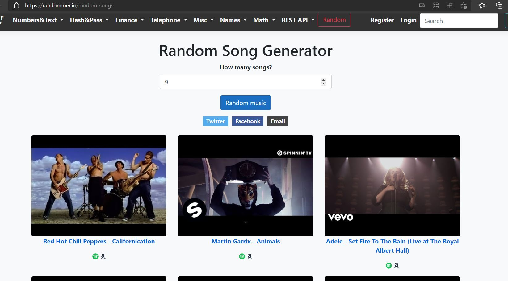

Helping musicians make the hard decision.
1.Help those in need of ideas for a musical style.
2.Introduce new styles to those who are not framilair with them.
3.Have a fun way to browse different styles of music.
I like the idea of having a wheel on the page, something interacive would be great. I also feel like a wheel is the perfect object because as you see it slow down, the suspense grows, and many enjoy that. The customization feature is also neat, if I could work that in then I would happy.
I like this random song generator for a few reasons. Firstly, the concept behind it. You get random songs that can take you to their song on spotify. They also display images of the songs. I am a fan of this visual aspect. Lastly, I like how uniformed the photos are. I like the idea of having songs show up, and it would be a useful tool to have paired with my idea.
Page 1) This will be the main page, it will contain the wheel and the spinning option.
Page 2) This will be where you can find music of the randomized style. This will include links to that style of music.
Page 3) This will be where you can customize the wheel, inserting your own choices into it. Naturally this will make the example portion unavailable
I want to add a way of navigating to these pages using some type of menu at the top of the website.
My target is the music community. I know that fellow composers have also struggled deciding on a style of music to write in. Hopefully this website will provide a solution to this problem.